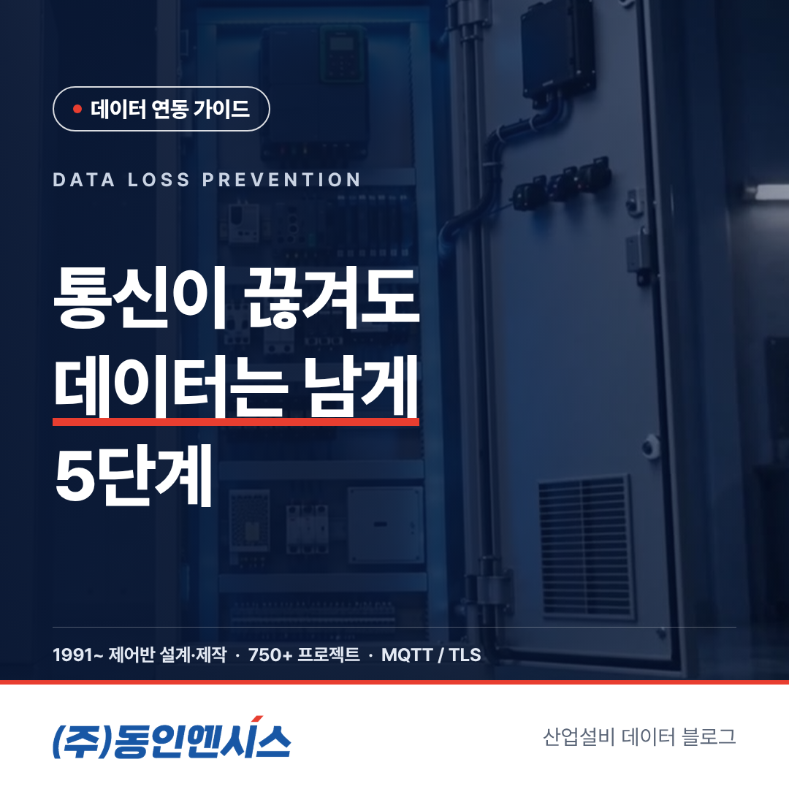
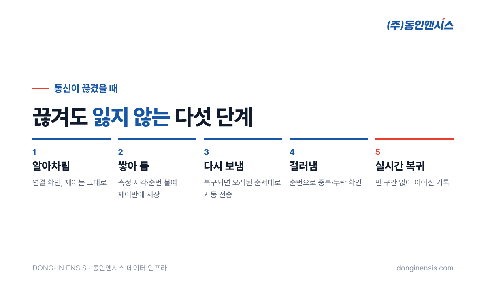
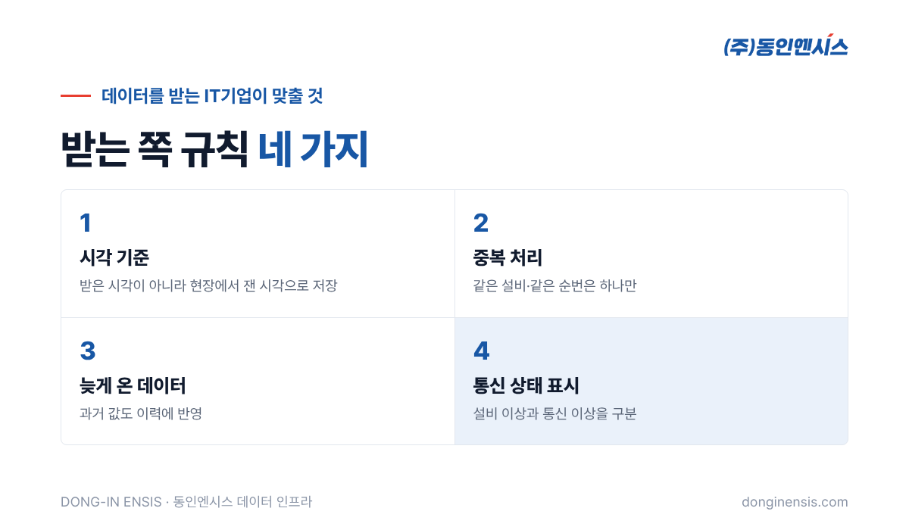

공장 네트워크는 생각보다 자주 끊깁니다. 공유기 재부팅, 공사 중 끊어진 케이블, 외곽 동의 약한 무선 신호까지 이유도 다양합니다. 문제는 그 사이 설비 데이터가 비어 버리는 것입니다. 이 글에서는 산업·선박 현장의 제어반을 설계·제작해 온 동인엔시스가 지능형 제어반에서 설비 데이터 유실 방지를 어떻게 하는지, 통신이 끊긴 순간부터 다시 이어질 때까지를 다섯 단계로 따라가 보겠습니다. MES·AI 플랫폼으로 데이터를 받는 IT기업 담당자분도 함께 보시면 좋습니다.
데이터 몇 분, 몇 시간이 비는 게 대수냐고 생각할 수 있습니다. 하지만 빈 구간은 생각보다 비싼 대가를 치르게 합니다.
그래서 데이터 인프라에서는 "끊기지 않게"만큼 "끊겨도 잃지 않게"가 중요합니다.
현장에서 통신이 끊기는 이유를 모아 보면, 대단한 사고보다 사소한 일상이 대부분입니다.
이런 일은 아무리 관리를 잘해도 완전히 없앨 수 없습니다. 그래서 동인엔시스는 끊김을 막는 데만 기대지 않고, 끊겨도 기록이 남도록 제어반 쪽에서 설비 데이터 유실 방지 구조를 기본으로 넣습니다. 네트워크가 완벽하지 않다는 것을 처음부터 전제로 설계하는 셈입니다.
이 구조가 있으면 담당자가 "어제 오후에 통신이 잠깐 끊겼다는데, 그때 데이터는?" 하고 걱정할 일이 줄어듭니다. 끊긴 구간이 언제였는지, 그 사이 설비가 어떻게 움직였는지 나중에 그대로 확인할 수 있기 때문입니다.

지능형 제어반은 서버와 연결이 살아 있는지 계속 확인합니다. 응답이 없으면 통신이 끊겼다고 판단하고, 그 순간부터 데이터를 보내는 방식을 바꿉니다. 이때도 설비 제어는 아무 영향 없이 계속됩니다. 인터록과 최종 제어는 원래 현장 PLC가 맡고 있고, 서버는 데이터를 받는 쪽일 뿐이기 때문입니다.
보내지 못한 측정값은 버리지 않고 제어반에 저장합니다. 각 값에는 현장에서 잰 시각과 순번이 함께 붙습니다. 서버에 늦게 도착하더라도 "이 값은 언제 잰 몇 번째 값"인지가 처음부터 정해져 있는 셈입니다.
통신이 돌아오면 쌓아 둔 값을 오래된 순서대로 자동으로 다시 보냅니다. 사람이 손으로 옮기거나 파일을 내려받아 올릴 필요가 없습니다. 오래된 것부터 보내기 때문에 서버 쪽에서는 시간 순서가 뒤섞이지 않고 빈 구간이 앞에서부터 채워집니다.
재전송 과정에서는 같은 값이 두 번 도착하거나, 아주 드물게 일부가 빠질 수도 있습니다. 측정 시각과 순번이 있으면 서버가 이것을 스스로 가려낼 수 있습니다. 같은 순번이 두 번 오면 하나만 남기고, 순번이 건너뛰면 어디가 비었는지 바로 알 수 있습니다.
밀린 값을 다 보내고 나면 다시 실시간 전송으로 돌아갑니다. 웹 화면과 API로 보는 기록에는 통신이 끊겼던 구간까지 이어진 그래프가 남습니다. IT기업 플랫폼은 기간별 이력을 조회해 그 구간을 다시 가져가면 됩니다.
Photorealistic photo of a small wall-mounted industrial network enclosure open in a Korean factory corridor, showing an industrial ethernet switch with green link LEDs, a compact LTE router with two short antennas, neatly labeled patch cables without readable text, a light-grey control cabinet nearby, realistic lighting, no people, no brand logos, no readable text. 3:2 landscape.
제어반이 아무리 잘 보내도, 받는 쪽이 준비돼 있어야 빈틈이 없습니다. 플랫폼을 연동할 때 아래를 미리 맞춰 두시길 권합니다.
이 네 가지만 맞춰 두면 통신 사정과 상관없이 설비의 하루가 빠짐없이 기록됩니다. 기술 미팅에서 이 규칙들을 먼저 합의해 두면, 첫 현장을 붙인 뒤 데이터를 다시 정리하는 수고를 크게 덜 수 있습니다.

다시 보내는 데이터도 평소와 똑같이 암호화된 연결로 전송합니다. 현장과 서버 사이 MQTT 통신은 TLS로 암호화하고, 제어망과 데이터망은 나눠 둡니다. 통신이 끊겼다 이어지는 과정에서 보안을 느슨하게 하지 않는 것도 설계의 기본입니다.
Photorealistic photo of a compact on-premise server room in a Korean manufacturing company: two black server racks with blue status lights, tidy cable management, a small monitoring screen on the wall showing abstract green graphs (unreadable), cool white lighting, no people, no brand logos, no readable text. 3:2 landscape.
Q. 얼마나 오래 끊겨도 버틸 수 있나요? 보관할 수 있는 양은 수집 항목 수, 측정 간격, 제어반 구성에 따라 달라집니다. 현장 통신 사정을 보고 그에 맞게 구성합니다.
Q. 끊긴 동안 알람은 어떻게 되나요? 기준값 알람은 현장 제어반에서 판단할 수 있도록 구성하고, 통신이 돌아오면 그 사이 있었던 일도 기록으로 확인할 수 있습니다.
Q. 설비 데이터 유실 방지를 위해 현장에서 따로 준비할 것이 있나요? 통신이 자주 끊기는 구간이 어디인지, 얼마나 오래 끊기는 편인지 알려 주시면 됩니다. 그 정보를 바탕으로 보관 용량과 통신 구성을 정하고, 비용은 현장 분석 뒤 견적에 함께 반영합니다. 통신 장비 위치를 옮기거나 LTE를 보조로 두는 방법도 함께 검토합니다.
Q. 이미 쓰는 수집 장비에도 이런 기능을 붙일 수 있나요? 장비마다 지원 여부가 달라 일괄적으로 말씀드리기 어렵습니다. 지능형 제어반으로 바꾸는 설비부터 이 방식을 적용하는 것을 권합니다.
설비 데이터 유실 방지는 화려한 기능은 아니지만, 데이터를 믿고 쓰기 위한 바닥입니다. 끊김을 알아차리고, 쌓아 두고, 순서대로 다시 보내고, 받는 쪽에서 걸러내는 다섯 단계가 그 바닥을 만듭니다.
동인엔시스는 1991년부터 쌓아 온 제어 경험 위에서, IT기업이 안심하고 쓸 수 있는 현장 데이터를 만드는 일을 하고 있습니다. 연동을 검토 중이시라면 협업 페이지로 연락 주세요.
기술 문의 051-862-3668 | dongin@donginmne.com
아래 질문 중 하나에 실제 경험으로 답해 본문 적당한 곳에 넣어 주세요. 사람이 직접 쓴 문장이 들어가면 네이버에서 저품질 위험이 줄고 노출에 도움이 됩니다.